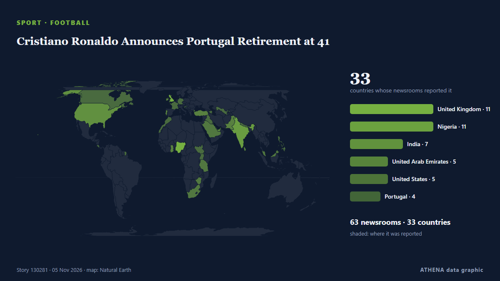

Европа
Европа: последние события по странам, с риском, источниками и странами от ATHENA.

СпортCristiano Ronaldo Announces Portugal Retirement at 41
The 41-year-old is Portugal's leading goalscorer having scored 146 goals in 232 appearances. из Express Tribune
Spain begins three days of mourning after train crash kills 69
The Portuguese Government has expressed its “deepest condolences” and “solidarity” to the Spanish authorities following a “tragic train accident” in the Toledo region that killed at least 30 people. из The Portugal News
High-speed train collision in Spain: 68 dead, more than 100 injured
MADRID: At least 10 people have died after a major collision involving two high-speed passenger trains in the central Spanish province of Toledo.The accident prompted the suspensi... из Oman Observer
Jordan: 3 arrested over deadly church attack
Workers were cleaning the last traces of blood from St George's Church in Jordan's Hammoud the day after a deadly attack, when visitors arrived to express their solidarity amid an atmosphere of shock… из Al-Monitor
Pope Leo's doctors say tests show he needs no further treatment for lung cancer
The American pope, 71, said Sunday recent medical checks led to the detection of the early-stage nodule. из NBC News (World)
Patrick Stewart, Star Trek and X-Men actor, dies at 86
Sir Patrick Stewart, the acclaimed British actor best known for playing Captain Jean-Luc Picard in Star Trek: The Next Generation and Professor Charles Xavier in the X-Men film franchise, has died at… из Gulf News
20-year-old Antonelli becomes youngest Formula One world champion
Mexico City is up next in the F1 season and Kimi Antonelli is on the brink of being crowned the youngest world champion in the sport’s history. из The National